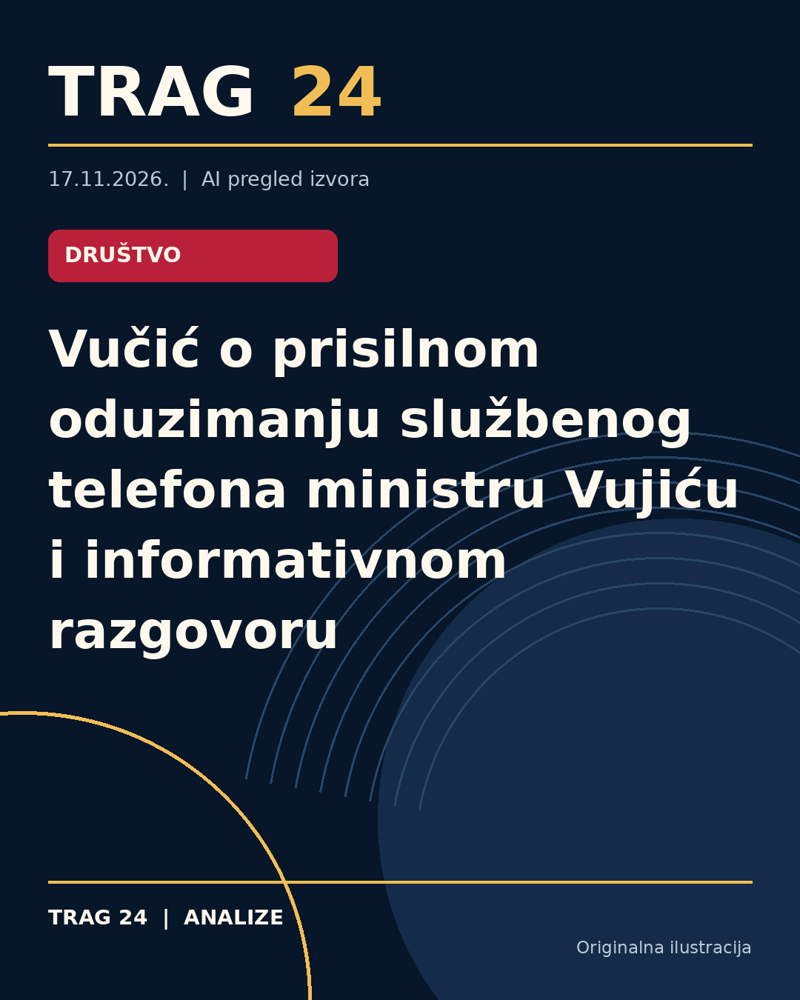

Vučić o prisilnom oduzimanju službenog telefona ministru Vujiću i informativnom razgovoru

ŠTA SE DOGODILO
Narodni poslanik Aleksandar Vučić izjavio je da su pripadnici Službe za borbu protiv organizovanog kriminala (SBPOK) juče prišli ministru pravde u tehničkom mandatu Nenadu Vujiću, oteli mu službeni telefon i pozvali ga na informativni razgovor.
HRONOLOGIJA
Do incidenta je došlo juče, a informativni razgovor je bio zakazan za 15 časova tog dana. Vučić je o tome govorio tokom skupštinskog izlaganja, ali specifični razlozi za pozivanje ministra Vujića na razgovor nisu precizirani osim navoda da je to povezano sa optužbama koje je pokrenula Studentska lista o Vujićevom navodnom uticaju na glasanje u zatvorima donošenjem cigareta.
ŠTA NAVODE IZVORI
Vučić opisuje da je razlog pozivanja na razgovor navodno bio to što je Vujić, prema tvrdnjama Studentske liste, uticao na glasanje u zatvorima deleći cigarete. Vučić je naveo da su cigarete, međutim, zvanično deljene po odluci nadležnih državnih organa 17 puta u periodu od 1. januara 2025. do 25. oktobra 2026. godine i to je uobičajena praksa u zatvorima, zajedno sa podelom garderobe. Izvor N1 i Danas takođe beleže ove izjave bez dodatnih potvrda ili komentara nadležnih institucija. Ministarstvo unutrašnjih poslova i Ministarstvo pravde nisu do objave odgovora objasnili razloge poziva na informativni razgovor.
ŠTA JE POTVRĐENO
Potvrđeno je da su pripadnici SBPOK pristupili ministru Vujiću, oduzeli mu službeni telefon i pozvali ga na informativni razgovor. Vučić je to javno saopštio, ali drugi izvori nisu nezavisno potvrdili detalje iz događaja niti razloge za taj poziv.
ŠTA NIJE POTVRĐENO
Razlozi zbog kojih je ministar Vujić pozvan na informativni razgovor nisu potvrđeni od strane nadležnih institucija. Takođe nije potvrđeno da je ministarov službeni telefon zaista „otet“ u smislu nezakonitog postupanja ili da postoji bilo kakva formalna optužba prema ministru. Nije poznato šta je predmet informativnog razgovora i da li postoje dalje radnje u vezi s ovim slučajem.
ŠTA OSTАJE OTVORENO: Ostaje nepoznato zašto je ministar Vujić pozvan na informativni razgovor i u kojim okolnostima mu je oduzet službeni telefon. Takođe je otvoreno pitanje da li postoje bilo kakvi konkretni dokazi ili istrage koje se tiču optužbi o deljenju cigareta i uticaju na glasanje u zatvorima ili nekoj drugoj nezakonitoj aktivnosti. Odgovori Ministarstva unutrašnjih poslova i Ministarstva pravde očekuju se radi razjašnjenja situacije.
Izvori
- https://www.kurir.rs/vesti/politika/10164894/vucic-o-otmici-telefona-ministra-vujica
- https://www.danas.rs/vesti/drustvo/sbpok-vujic-informativni-razgovor/
- https://n1info.rs/vesti/vucic-pripadnici-sbpok-a-oteli-ministru-vujicu-telefon-i-pozvali-ga-na-informativni-razgovor/
Ova analiza je pripremljena uz pomoć veštačke inteligencije na osnovu javno dostupnih izvora. Navodi izvora nisu nužno nezavisno potvrđeni.